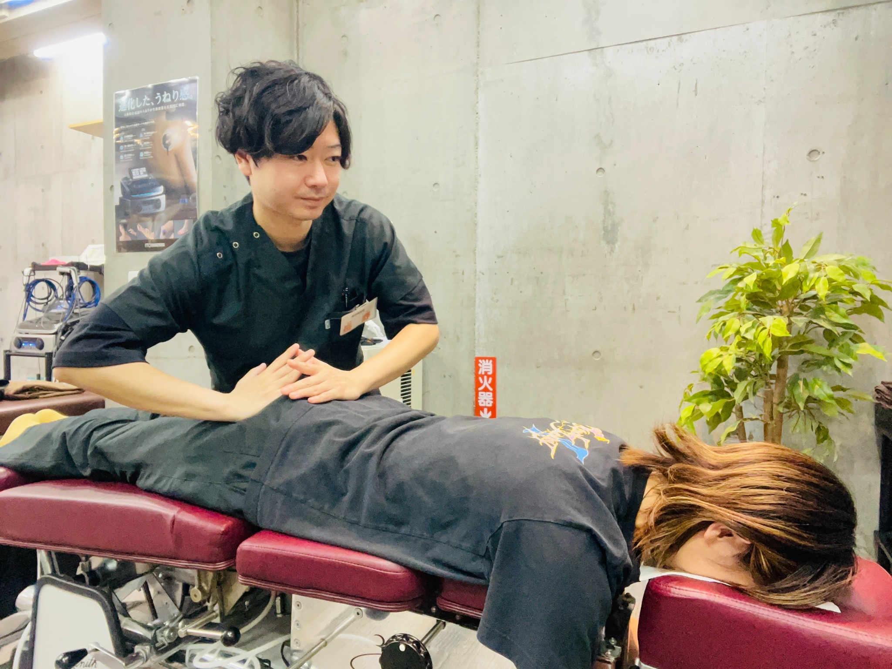
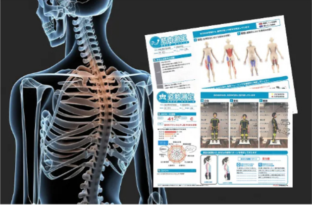
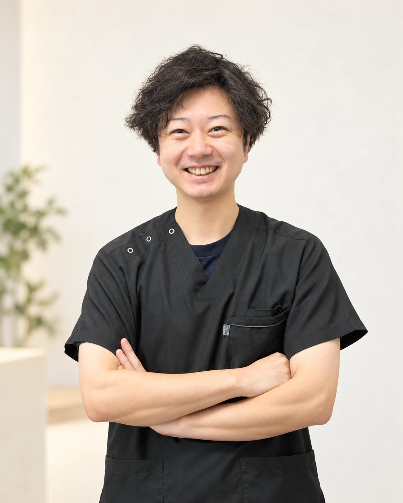

大泉学園院に続く、2店舗目へ。
練馬区・大泉学園で評価された院が、
ついに越谷へ！
越谷市弥十郎に「越谷ウェライフ整骨院」。
一人ひとりのお話に耳を傾け、姿勢と骨盤から、これからの毎日を考えます。

※水曜日は定休日です。開院日は決まり次第ご案内します。
01大泉学園でいただいた信頼を、越谷でも。
大泉学園院で大切にしてきた、一人ひとりに合わせたケア。その想いを2店舗目の越谷院にも引き継ぎ、地域の皆さまのお身体の悩みに向き合います。
提供いただいた掲示資料に基づく評価（2024年表記）。
越谷院の評価ではなく、現在の評価とは異なる場合があります。
02500円で、からだを知るAI姿勢分析×骨盤矯正体験会。
「自分の姿勢が気になる」「長引く不調を相談したい」。
そんな方のはじめの一歩として、500円AI姿勢分析×骨盤矯正体験会をご案内しています。
まずは、あなたのからだと向き合う時間を。
はじめての方へ。
AI姿勢分析 ×
骨盤矯正体験会
開催日・実施内容の詳細は、決まり次第ご案内します。
骨盤診断はコチラ👆
LINE友だち追加で骨盤診断プレゼント！！
追加後、トークで「特典」とメッセージください。
友だち追加だけでは予約は確定しません。
03こんなお悩みはありませんか？
- ✓慢性的な肩こりや首のつらさが気になる
- ✓長引く腰痛・腰の重さを相談したい
- ✓猫背や姿勢のバランスを見直したい
- ✓自分に合う施術を一緒に考えてほしい
「いつものこと」と感じているお悩みも、まずはお聞かせください。気になる症状や生活習慣を伺いながら、ケアの方針を一緒に考えます。
お身体の状態によっては、医療機関の受診をご案内する場合があります。
04AI姿勢分析と、骨盤矯正を中心とした施術。
AI姿勢分析で
からだの「今」を知る。

姿勢やからだのバランスを確認。分析結果に加え、日々の過ごし方やお悩みも伺い、施術プランを考えます。
骨盤矯正を中心に、
一人ひとりに合わせて。
姿勢と骨盤のバランスに着目。柔道整復師の国家資格を持つ施術者が、お身体の状態に合わせた施術をご案内します。
AI姿勢分析は医療上の診断ではありません。施術の感じ方や変化には個人差があり、効果を保証するものではありません。慢性的な肩こり・腰痛への施術は、原則として健康保険の対象外です。
05越谷院院長・長野陸のご紹介。

越谷ウェライフ整骨院 院長
長野 陸
国家資格・柔道整復師 保有一人ひとりのお悩みと、
その先の毎日に寄り添う。
気になる症状や日々の過ごし方を伺いながら、AI姿勢分析と骨盤矯正を中心に、お身体に合わせた施術を考えます。
相談するきっかけは、小さな違和感でも大丈夫です。まずは公式LINEからお問い合わせください。
06はじめての方も、まずはLINEから。
- 1
公式LINEを友だち追加
下の緑色のボタンから、LINEの友だち追加画面へ。
- 2
「特典」とメッセージ
骨盤診断をご希望の方は、トークで「特典」とメッセージください。体験会・予約についてもご相談いただけます。
- 3
ご案内を確認
予約については、LINEでご相談ください。友だち追加のみでは予約は確定しません。
骨盤診断はコチラ👆
LINE友だち追加で骨盤診断プレゼント！！
追加後、トークで「特典」とメッセージください。
07店舗情報・アクセス。
越谷ウェライフ整骨院
- 所在地
- 埼玉県越谷市弥十郎557 弥十郎店舗B
マミープラスの向かい側のテナント - 営業時間
- 9:00〜21:00
平日・土曜・日曜・祝日共通 - 定休日
- 水曜日（祝日も休業）
- 駐車場
- 2台完備
- 開院日
- 決まり次第お知らせします
- ご予約
- 公式LINEからお問い合わせください
08よくあるご質問。
AI姿勢分析×骨盤矯正体験会はいくらですか？
参加費は500円です。開催日・実施内容・参加条件などの詳細は、決まり次第ご案内します。
駐車場はありますか？
2台分の駐車場をご用意しています。
土日や祝日も営業していますか？
土日祝日も9:00〜21:00で営業します。水曜日は祝日でも定休日です。
LINEを追加したら予約完了ですか？
友だち追加だけでは予約は確定しません。トークでAI姿勢分析×骨盤矯正体験会や予約についてお問い合わせください。
大泉学園で大切にしてきた想いを、越谷でも。
あなたのからだのこと、
まずは聞かせてください。
お問い合わせ骨盤診断はコチラ👆
LINE友だち追加で骨盤診断プレゼント！！
追加後、トークで「特典」とメッセージください。